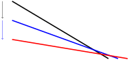
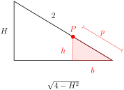
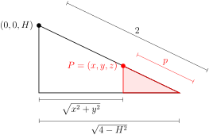
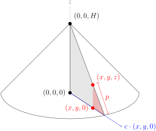

Section 13.1 Definitions and First Examples
In the last chapter, we studied vector valued functions of a single variable, like, for example, the velocity \(\vv(t)\) of a particle at time \(t\text{.}\) Suppose however that we are interested in a fluid. There is a, possibly different, velocity at each point in the fluid. So the velocity of a fluid is really a vector valued function of several variables. Such a function is called a vector field.
Definition 13.1.1.
- A vector field in the plane is a rule which assigns to each point \((x,y)\) in a subset, \(D\text{,}\) of the \(xy\)-plane, a two component vector \(\vv(x,y)\text{.}\)
- A vector field in space is a rule which assigns to each point \((x,y,z)\) in a subset of \(\bbbr^3\text{,}\) a three component vector \(\vv(x,y,z)\text{.}\)
Here are two typical applications that naturally involve vector fields.
- If \(\vv(x,y,z)\) is the velocity of a moving fluid at position \((x,y,z)\text{,}\) then \(\vv\) is called a velocity field.
- If \(\vF(x,y,z)\) is the force at position \((x,y,z)\text{,}\) then \(\vF\) is called 1 a force field.
Example 13.1.2. The Point Source.
Imagine
- The whole world is filled with an incompressible fluid. Call it water.
- Somehow you find a way to produce still more water at the origin. Say you create \(4\pi m\) litres per second.
- This forces the water to flow outward. Let's suppose that it flows symmetrically outward from the origin.
Let's find the resulting vector field \(\vv(x,y,z)\text{.}\) As the flow is to be symmetric, the velocity of the water at the point \((x,y,z)\)
- has to be pointing radially outward from the origin. That is, the direction of the velocity vector \(\vv(x,y,z)\) has to be the unit radial vector\begin{equation*} \hat\vr(x,y,z) = \frac{x\hi + y\hj + z\hk}{\sqrt{x^2+y^2+z^2}} \end{equation*}
- The magnitude of the velocity, i.e. the speed \(|\vv(x,y,z)|\) of the water, has to depend only on the distance from the origin. That is, the speed can only be some function of\begin{equation*} r(x,y,z) = \sqrt{x^2+y^2+z^2} \end{equation*}
Thus the velocity field is of the form
We just have to determine the function \(v(r)\text{.}\) Fix any \(r \gt 0\) and concentrate on the sphere \(x^2+y^2+z^2=r^2\text{.}\) It is sketched in red in the figure below.

During a very short time interval \(dt\) seconds, \(4\pi m\,dt\) litres of water is created at the origin (which is the red dot). As the water is incompressible, \(4\pi m\,dt\) litres of water must exit through the sphere during the same time interval to make room for the newly created water.
But, at the surface of the sphere the water is flowing radially outward with speed \(v(r)\text{.}\) So during the time interval in question the water near the surface of the sphere moves outward a distance \(v(r)\,dt\text{,}\) and in particular the water that was in the thin spherical shell \(\ \ r-v(r)\,dt \le \sqrt{x^2+y^2+z^2} \le r\ \ \) at the beginning of the time interval exits through the sphere \(\sqrt{x^2+y^2+z^2} = r\) during the time interval. The shell is sketched in gray in the figure above. The volume of water in the gray shell is essentially the surface area of the shell, which is \(4\pi r^2\text{,}\) times the thickness of the shell, which is \(v(r)\,dt\text{.}\) So, equating the volume of water created inside the sphere with the volume of water that exited the sphere,
Thus our vector field is
If the world were two, rather than three dimensional 2 , and the source created \(2\pi m\) litres per second, the same argument leads to
and to the vector field
To get a mental image of what this field looks like, imagine sketching, for each point \((x,y)\text{,}\) the vector \(\frac{m}{r(x,y)}\,\hat\vr(x,y)\) with its tail at \((x,y)\text{.}\) Note that the vector \(\frac{m}{r(x,y)}\,\hat\vr(x,y)\)
- points radially outward and
-
has length \(\frac{m}{r(x,y)}\) which
- depends only on \(r=|(x,y)|\) and
- is very long when \((x,y)\) is near the origin and
- decreases in length like \(\frac{1}{r}\) as \(r=|(x,y)|\) increases.
Here is a sketch of a bunch of such vectors.

Note that as \(|(x,y)|\rightarrow 0\text{,}\) the magnitude of the velocity \(|\vv(x,y)|\rightarrow\infty\text{.}\) This is a consequence of our idealized assumption that we are producing water at a single point (the origin).
Example 13.1.4. The Vortex.
In this example, we sketch the vector field
where \(\Om\) is just a strictly positive constant. We give an efficient procedure for getting a rough sketch, which still provides a pretty realistic picture of the vector field, and which also generalises to other vector fields. First concentrate on the horizontal component \(\hi\cdot\vv(x,y)\) of the vector field and determine in which part of the \(xy\)-plane it is zero, in which part it is positive and in which part it is negative.
Next repeat with the vertical component.
This naturally divides the \(xy\)-plane into nine parts according to whether each of the components is positive, \(0\) or negative —
- \(\hi\cdot\vv \gt 0\) and \(\hj\cdot\vv \gt 0\) in \(\big\{\ (x,y)\in\bbbr^2\ \big|\ y \lt 0,\ x \gt 0\ \big\}\)
- \(\hi\cdot\vv \gt 0\) and \(\hj\cdot\vv=0\) in \(\big\{\ (x,y)\in\bbbr^2\ \big|\ y \lt 0,\ x=0\ \big\}\)
- \(\hi\cdot\vv \gt 0\) and \(\hj\cdot\vv \lt 0\) in \(\big\{\ (x,y)\in\bbbr^2\ \big|\ y \lt 0,\ x \lt 0\ \big\}\)
- \(\hi\cdot\vv=0\) and \(\hj\cdot\vv \gt 0\) in \(\big\{\ (x,y)\in\bbbr^2\ \big|\ y=0,\ x \gt 0\ \big\}\)
- and so on
Now think of \(\vv(x,y)\) as being the velocity at \((x,y)\) of a flowing fluid.
-
Look at the first bullet point above. It says that in the first of the nine parts, namely \(\big\{\ (x,y)\in\bbbr^2\ \big|\ y \lt 0,\ x \gt 0\ \big\}\text{,}\) which is the fourth quadrant, the horizontal component \(\hi\cdot\vv \gt 0\) signifying that the fluid is flowing rightwards. Indicate this in the sketch by drawing a rightward pointing horizontal arrow at some generic point in the middle of the fourth quadrant. (It's the blue arrow in the figure below.) The vertical component \(\hj\cdot\vv \gt 0\) signifying that the fluid is also moving upwards. Indicate this in the sketch by drawing an upward pointing vertical arrow at the same generic point in the fourth quadrant. (It's the red arrow in the figure below.)

-
Next, look at the second bullet point above. It says that on the second of the nine parts, namely \(\big\{\ (x,y)\in\bbbr^2\ \big|\ y \lt 0,\ x=0\ \big\}\text{,}\) which is the bottom half of the \(y\)-axis, the horizontal component \(\hi\cdot\vv \gt 0\text{,}\) signifying that the fluid is moving rightwards. Indicate this in the sketch by drawing a rightward pointing horizontal arrow at some generic point in the middle of the bottom half of the \(y\)-axis. (It's the second blue arrow in the figure below.) The vertical component \(\hj\cdot\vv=0\) signifying that the fluid has no vertical motion at all. Indicate this in the sketch by not drawing any vertical arrow on the bottom half of the \(y\)-axis.

- and so on
By the time we have looked at all nine regions we will have built up the following sketch.

From this sketch we see that, for example, in the first quadrant,
- the fluid is moving upwards and to the left and
- the fluid crosses the \(x\)-axis vertically (so that close to the \(x\)-axis, the arrows will be almost vertical) and
- the fluid crosses the \(y\)-axis horizontally (so that close to the \(y\)-axis, the arrows will be almost horizontal) and
- there is one point, namely \((0,0)\text{,}\) where the vector field is exactly zero. It's the black dot in the centre of the figure above. Furthermore \(\vv(x,y)=\Omega(-y\hi+x\hj)\) is smaller when \((x,y)\) is closer to \((0,0)\) and \(\vv(x,y)\) is larger when \((x,y)\) is farther from \((0,0)\text{,}\)
Putting all of this accumulated wisdom together, we come up with this better sketch of the vector field.

This shows the field swirling around the origin in a counterclockwise direction. Hence the name “vortex”.
Example 13.1.7. The Undamped Nonlinear Pendulum.
In this example, we illustrate another way in which vector fields arise. Model a pendulum by a mass \(m\) that is connected to a hinge by an idealized rod that is massless 3 and of fixed length \(\ell\text{.}\) Denote by \(\theta\) the angle

between the rod and vertical. The forces acting on the mass are
- gravity and
- the tension in the rod, whose magnitude, \(\tau\text{,}\) automatically adjusts itself so that the distance between the mass and the hinge is fixed at \(\ell\text{.}\)
In the optional 4 Section 13.5, we show that the angle \(\theta(t)\) obeys the second order nonlinear 5 differential equation
It is often much more convenient to deal with first order, rather than second order, differential equations. The second order pendulum equation above may be reformulated 6 as a system of first order ordinary differential equations, by the simple expedient of defining
So \(x(t)\) is the angle at time \(t\) and \(y(t)\) is the angular velocity at time \(t\text{.}\) Then,
Usually, one does not write in the \((t)\) dependence explicitly.
The right hand sides form the vector field
We can sketch this vector field, just as we sketched the vector field of Example 13.1.4. Noting that the horizontal component
and the vertical component.
we have
- rightward motion 7 when \(y \gt 0\)
- leftward motion when \(y \lt 0\)
- downward motion when \(0 \lt x \lt \pi\text{,}\) \(2\pi \lt x \lt 3\pi\text{,}\) \(\cdots\) and
- upward motion when \(-\pi \lt x \lt 0\text{,}\) \(\pi \lt x \lt 2\pi\text{,}\) \(\cdots\text{.}\)
This gives us the collection of arrows in the figure

Our full sketch will be less cluttered if we make all arrows the same length. This gives

which is a sketch of what is called the direction field of our vector field (see below).
In the next section, we'll learn how to use vector field sketches to sketch solution trajectories.
Definition 13.1.8.
The direction field of a vector field \(\vv(x,y,z)\) is the vector field
Exercises 13.1.1 Exercises
1.
Below is a sketch of the vector field \(\vv(x,y)\text{.}\)
Find the regions where the \(x\)-coordinates and \(y\)-coordinates are positive, negative, and zero:
You may assume that \(\vv(x,y)\) behaves as expected at the points you don't see. That is, the samples are representative of a smooth, continuous vector-valued function. You may also assume the tick marks on the axes correspond to unit distances.
Not all blanks represent a single interval.
and
at least for \((x,y)\) shown in the sketch.
The vectors are pointing to the right when \(x \gt 0\text{,}\) to the left when \(x \lt 0\text{,}\) and are vertical when \(x=0\text{.}\) So, at least for \((x,y)\) shown in the sketch,
The behaviour of the \(y\)-values is more complicated. Vectors in one vertical line seem to be all pointing up, or all pointing down. So, the sign of \(\vv\cdot\hj\) depends only on \(x\text{,}\) not on \(y\) (although the magnitude of \(\vv\cdot\hj\) depends on both). Roughly, the vectors are pointing
- Down when \(x \lt -2\text{;}\)
- horizontally when \(x=-2\) (remember the vector is positioned with the base of \(\vv(x,y)\) at \((x,y)\text{;}\)
- up when \(-2 \lt x \lt 2\text{;}\)
- horizontally when \(x=2\text{;}\)
- up when \(2 \lt x\text{.}\)
Since we're assuming there's nothing surprising happening between the samples pictured, at least for \((x,y)\) shown in the sketch,
2.
Below is a sketch of the vector field \(\vv(x,y)\text{.}\)
Find the regions where the \(x\)-coordinates and \(y\)-coordinates are positive, negative, and zero:
You may assume that the samples shown are representative of the general behaviour of \(\vv(x,y)\text{.}\) You may also assume the tick marks on the axes correspond to unit distances.
Write down all coordinates where \(\vv(x,y)\cdot\hi=0\) or \(\vv(x,y)\cdot\hj=0\text{,}\) and look for a pattern.
and
at least for \((x,y)\) shown in the sketch.
To start out, we find the places where \(\vv(x,y)\cdot\hi=0\) (vertical vectors) or \(\vv(x,y)\cdot\hj=0\) (horizontal vectors). Remember the vector \(\vv(x,y)\) has its tail at \((x,y)\text{.}\)
We see the vertical vectors (those with \(\vv(x,y)\cdot\hi=0\)) occur at every point along the line \(y=-x\text{,}\) while horizontal vectors (those with \(\vv(x,y)\cdot\hj=0\)) occur at every point along the line \(y=x\text{.}\)
Indeed, below the line \(y=-x\text{,}\) vectors point to the left, while above the line \(y=-x\) they point to the right. Similarly, vectors point down when they're above the line \(y=x\text{,}\) and the point up when they're below the line \(y=x\text{.}\)
So, at least for \((x,y)\) shown in the sketch,
3.
A platform with many small conveyor belts is aligned on a coordinate plane. Every conveyor belt moves an object on top of it in the direction of the origin, and a conveyor belt at position \((x,y)\) causes an object on top of it to move with speed \(y\text{.}\) Assume the objects do not interfere with one another.
Give a vector-valued formula for the velocity of an object at position \((x,y)\text{.}\)
If you know the speed and direction of an object, you can find its velocity.
\(\vv(x,y)=\frac{-y}{\sqrt{x^2+y^2}}(x,y)\)
Since all conveyors point towards the origin, the direction of motion of an object at location \((x,y)\) is \(\frac{(-x,-y)}{\sqrt{x^2+y^2}}\text{.}\) Its magnitude is \(y\text{,}\) so \(\vv(x,y)=\frac{-y}{\sqrt{x^2+y^2}}(x,y)\text{.}\)
4.
Let \(\vF = P\,\hi + Q\,\hj\) be the two-dimensional vector field sketched below.

Determine the signs of \(P\text{,}\) \(Q\text{,}\) \(\pdiff{Q}{x}\) and \(\pdiff{Q}{y}\) at the point \(A\text{.}\)
\(P \gt 0\)
\(Q \gt 0\)
\(\pdiff{Q}{x} \lt 0\)
\(\pdiff{Q}{y} \gt 0\)
The arrows near the point \(A\) are pointing to the right, indicating that \(P \gt 0\text{,}\) and upward, indicating that \(Q \gt 0\text{.}\) Moving from left to right near \(A\text{,}\) the vertical component of the arrows is decreasing, indicating that \(\pdiff{Q}{x} \lt 0\text{.}\) Moving vertically upwards near \(A\text{,}\) the vertical component of the arrows is increasing, indicating that \(\pdiff{Q}{y} \gt 0\text{.}\)
5.
Imagine that the vector field \(\vv(x,y) = x\,\hi+y\,\hj\)
is the velocity field of a moving fluid.
- At time \(0\) you drop a twig into the fluid at the point \((1,1)\text{.}\) What is the approximate position of the twig at time \(t=0.01\text{?}\)
- At time \(0\) you drop a twig into the fluid at the point \((0,0)\text{.}\) What is the position of the twig at time \(t=0.01\text{?}\)
- At time \(0\) you drop a twig into the fluid at the point \((0,0)\text{.}\) What is the position of the twig at time \(t=10\text{?}\)
When the twig is at \((x,y)\) it has velocity \(\vv(x,y)\text{.}\)
(a) \((1.01\,,\,1.01)\)
(b) \((0\,,\,0)\)
(c) \((0\,,\,0)\)
(a) At time \(0\) the velocity of the twig is \(\vv(1,1) =\hi+\hj\text{.}\) So at time \(t=0.1\text{,}\) the position of the twig is approximately
(b) At time \(0\) the velocity of the twig is \(\vv(0,0) =\vZero\text{.}\) So at time \(t=0.1\text{,}\) the position of the twig is
(c) At time \(0\) the velocity of the twig is \(\vv(0,0) =\vZero\text{.}\) So it is stationary and its velocity remains zero for all time. The position of the twig at time \(10\text{,}\) and in fact at all times, is \((0\,,\,0)\text{.}\)
6.
Imagine that the vector field \(\vv(x,y) = 2x\,\hi -\hj\)
is the velocity field of a moving fluid. At time \(0\) you drop a twig into the fluid at the point \((0,0)\text{.}\) What is the position of the twig at time \(t=10\text{?}\)
Whenever the twig is on the \(y\)-axis, its velocity is parallel to the \(y\)-axis. So it remains on the \(y\)-axis for all time.
\((0\,,\,-10)\)
The velocity of the fluid at all points of the \(y\)-axis is \(-\hj\text{.}\) So the twig will remain on the \(y\)-axis and will consequently have velocity \(-\hj\) for all time. The position of the twig at time \(10\) will be
7.
A platform with many small conveyor belts is aligned on a coordinate plane. Every conveyor belt moves an object on top of it in the direction of the origin, and a conveyor belt at position \((x,y)\) causes an object on top of it to move with speed \(y\text{.}\) Assume the objects do not interfere with one another.
Give a vector-valued formula for the velocity of an object at position \((x,y)\text{.}\)
If you know the speed and direction of an object, you can find its velocity.
\(\vv(x,y)=\frac{-y}{\sqrt{x^2+y^2}}(x,y)\)
Since all conveyors point towards the origin, the direction of motion of an object at location \((x,y)\) is \(\frac{(-x,-y)}{\sqrt{x^2+y^2}}\text{.}\) Its magnitude is \(y\text{,}\) so \(\vv(x,y)=\frac{-y}{\sqrt{x^2+y^2}}(x,y)\text{.}\)
8.
Friendly bees fly towards your face from all directions. The speed of each bee is inversely proportional to its distance from your face. Find a vector field for the velocity of the swarm.
Set your face to be at the origin, \((0,0,0)\text{.}\)
If \(A\) is “inversely proportional” to \(B\text{,}\) then there exists a constant \(\alpha\) such that \(AB=\alpha\text{.}\) That way when \(|B|\) goes up, \(|A|\) goes down, and vice-versa.
If your face is at the origin, then \(\vv(x,y,z)=-\frac{\alpha}{{x^2+y^2+z^2}}(x,y,z)\) for some positive constant \(\alpha\text{.}\)
Set your face to be at the origin of our coordinate system, \((0,0,0)\text{.}\) A bee at position \((x,y,z)\) is a distance of \(\sqrt{x^2+y^2+z^2}\) from your face, heading in the direction \((-x,-y,-z)\text{.}\) So, the unit vector indicating the direction of one friendly bee is \(\frac{-1}{\sqrt{x^2+y^2+z^2}}(x,y,z)\text{.}\) Now all we need to find is the length of this vector, i.e. the speed of the friendly bee.
The speed of the friendly bee is inversely proportional to \(\sqrt{x^2+y^2+z^2}\text{,}\) its distance from your face. (Bees that are farther away are buzzing towards you more excitedly.) So, speed is given by \(\frac{\alpha}{\sqrt{x^2+y^2+z^2}}\) for some constant \(\alpha\text{.}\)
The bee velocity has the direction of the unit vector \(\frac{-1}{\sqrt{x^2+y^2+z^2}}(x,y,z)\) with length \(\frac{\alpha}{\sqrt{x^2+y^2+z^2}}\) for some positive constant \(\alpha\text{.}\) That is,
9.
Sketch the vector field \(\vv(x,y)=(x^2,y)\text{.}\)
Start with the regions where \(\vv(x,y)\cdot\hi\) and \(\vv(x,y)\cdot\hj\) are positive and negative. As you move up/down/left/right, do the vectors get longer or shorter? More horizontal or more vertical?
Beginning as in Example 13.1.4, we note
and
That leads to the following picture:
This gives us a general idea to start with. Refining, we notice that when \(x^2 \gt |y|\text{,}\) then the vector \(\vv(x,y)\) will be more horizontal than vertical. As we move away from the \(y\)-axis in a horizontal line, the difference between \(x^2\) and \(|y|\) grows, so the vectors get more and more horizontal. However, for a fixed value of \(x\text{,}\) vectors farther from the axis will be more vertical than vectors closer to it.
10.
Sketch the direction field of \(\vv(x,y) = \left( \sqrt{x^2+y^2} , \sqrt{(x-1)^2+(y-1)^2}\right)\text{.}\)
\(\vv(x,y)\cdot \hi\) is the distance from \((x,y)\) to the origin, while \(\vv(x,y)\cdot\hj\) is the distance from \((x,y)\) to the point \((1,1)\text{.}\)
Although ultimately we'll sketch only unit-length vectors, we can still find the direction of \(\vv(x,y)\) by finding its \(x\)- and \(y\) components.
Note \(\vv(x,y)\cdot \hi\) is the distance from \((x,y)\) to the origin, while \(\vv(x,y)\cdot\hj\) is the distance from \((x,y)\) to the point \((1,1)\text{.}\) Both these numbers are always nonnegative. This leads to the following sketch:
When \((x,y)\) is far from the origin, its distance from \((0,0)\) is almost the same as its distance from \((1,0)\text{.}\) So, we expect \(\vv(x,y)\) to be approximately a scalar multiple of \((1,1)\text{.}\)
At \((0,0)\text{,}\) \(v(0,0)\cdot \hi=0\text{,}\) so our vector is horizontal; similarly, \(v(1,1)\cdot\hj=0\) so this vector is horizontal. Vectors very near to \((0,0)\) are nearly horizontal, while vectors near to \((1,1)\) are nearly vertical.
For the direction field, we normalize our vectors to have unit length.
11.
Sketch the direction field of \(\vv(x,y)=(x^2+xy,y^2-xy)\text{.}\)
Factor \(x^2+xy=x(x+y)\) and \(y^2-xy=y(x-y)\text{.}\) Chop the plane up into eight regions using the two coordinate axes and the lines \(y=x\text{,}\) \(y=-x\text{.}\)
The sign of \(\vv(x,y) \cdot \hi = x(x+y)\) depends on the signs of \(x\) and \(x+y\text{.}\) When they have the same signs, \(\vv(x,y)\cdot \hi\) is positive, so \(\vv(x,y)\) points to the right; when they have different signs, \(\vv(x,y)\) points to the left.
Similarly, the sign of \(\vv(x,y) \cdot \hj = y(y-x)\) depends on the signs of \(y\) and \(y-x\text{.}\)
All together:
Refining, we notice that as we move straight up or down, \(|\vv(x,y)\cdot \hi|\) has its minimum along the lines \(y=-x\) and \(x=0\text{.}\) So, the vectors become more strongly vertical as we approach \(y=-x\) and \(x=0\) from above or below.
Similarly, \(|\vv(x,y)\cdot \hj|\) has its minima along the lines \(y=x\) and \(y=0\text{,}\) so the vectors become more strongly horizontal as we approach \(y=x\) horizontally.
12.
Sketch the vector field \(\displaystyle \vv(x,y)=\left[\frac{1/3}{\sqrt{x^2+y^2}}(x,y)+\frac{1/3}{\sqrt{(x-1)^2+y^2}}(x-1,y)\right]\text{.}\)
What is the geometric interpretation of each summand?
The field \(\vv(x,y)\) is the sum, scaled by 1/3, of the unit vector pointing away from the origin and the unit vector pointing away from \((1,0)\text{.}\) This tells us about a few regions:
- Along the \(x\) axis between \((0,0)\) and \((1,0)\text{,}\) the vectors away from these points are pointing in opposite directions (and have the same length), so they cancel each other out. That is, \(v(x,0)=0\) for all \(x \in (0,1)\text{.}\)
- \(v(0,0)\) and \(v(1,0)\) are not defined.
-
Along the \(x\)-axis outside of \([0,1]\text{,}\) the vector pointing away from the point \((0,0)\) is the same as the vector pointing away from the point \((1,0)\text{.}\) So, \(v(x,0)=(-2/3,0)\) for \(x \lt 0\) and \(v(x,0)=(2/3,0)\) for \(x \gt 1\text{.}\)
-
As the distance from \((x,y)\) to the origin grows, the vector pointing away from \((0,0)\) looks more and more like the vector pointing away from \((1,0)\text{.}\) So, our vectors far away from the origin look like vectors of length about 2/3, pointing away from the origin.
13.
Sketch each of the following vector fields, by drawing a figure like Figure 13.1.3.
- \(\vv(x,y) = x\,\hi+y\,\hj\text{.}\)
- \(\vv(x,y) = 2x\,\hi -\hj\text{.}\)
- \(\vv(x,y) = \frac{y\,\hi -x\,\hj}{\sqrt{x^2+y^2}}\text{.}\)
(a), (c) Intrepret the vector field geometrically.
(a)

(b)

(c)

(a) The vector field \(\vv(x,y) = x\,\hi+y\,\hj\) is the same as the radius vector. It points radially outward and has length growing linearly with the distance from the origin.
(b) The vertical component of \(\vv(x,y) = 2x\,\hi -\hj\) is always \(-1\text{.}\) Its horizontal component is \(2x\text{,}\) so that
- \(\vv(x,y)\) is rightward pointing when \(x \gt 0\) and leftward pointing when \(x \lt 0\text{,}\) and
- the magnitude of the horizontal component grows linearly with the distance from the \(y\)-axis.
It is sketched in the figure on the left below.
(c) For every \((x,y)\) the vector \(\vv(x,y) = \frac{y\,\hi -x\,\hj}{\sqrt{x^2+y^2}}\)
- is of length \(1\) and
- is perpendicular to the radius vector \(x\,\hi+y\,\hj\text{.}\)
- \(\vv(x,y)\) is rightward pointing when \(y \gt 0\) and leftward pointing when \(y \lt 0\text{,}\) and
- \(\vv(x,y)\) is downward pointing when \(x \gt 0\) and upward pointing when \(x \lt 0\text{.}\)
It is sketched in the figure on the right above.
14.
A body of mass \(M\) exerts a force of magnitude \(\frac{GM}{D^2}\) on a particle of unit mass distance \(D\) away from itself, where \(G\) is a physical constant. The force acts in the direction from the particle to the body.
Suppose a mass of 5 kg sits at position \((0,0)\text{,}\) a mass of 3 kg sits at position \((2,3)\text{,}\) and a mass of 7 kg sits at position \((4,0)\) on a coordinate plane. Give the vector field \(\vf(x,y)\) of the net gravitational force exerted on a unit mass at position \((x,y)\text{.}\)
The constant \(G\) is the same for all masses, but \(M\) differs. The net force is the sum of three force vectors.
\(\vf(x,y)=\frac{-5G(x,y)}{(x^2+y^2)^{3/2}}+\frac{3G(2-x,3-y)}{((x-2)^2+(y-3)^2)^{3/2}}+\frac{7G(4-x,-y)}{((x-4)^2+y^2)^{3/2}}\)
A particle of unit mass at position \((x,y)\) has distance \(D_1=\sqrt{x^2+y^2}\) from the 5kg mass, so that mass exerts a force of magnitude \(\frac{G(5)}{x^2+y^2}\) on the particle. This force has direction \((-x,-y)\text{.}\) So, the force exerted by the 5kg mass is \(\vf_1(x,y)=\frac{-5G}{(x^2+y^2)^{3/2}}(x,y)\text{.}\)
Similarly, the 3 kg mass at \((2,3)\) exerts a force of \(\vf_2(x,y)=\frac{3G}{((x-2)^2+(y-3)^2)^{3/2}}(2-x,3-y)\text{;}\) and the 7 kg mass at \((4,0)\) exerts a force of \(\vf_3(x,y)=\frac{7G}{((x-4)^2+y^2)^{3/2}}(4-x,-y)\text{.}\)
The net force on a unit mass is therefore
15.
-
A pole leans against a vertical wall. The pole has length 2, and it touches the wall at height \(H=1\text{.}\) The pole slides down, still touching the wall, with its height decreasing at a rate of \(\diff{H}{t}=0.5\text{.}\)
Find a vector function \(\vv:\mathbb [0,2] \to \mathbb R^2\) for the velocity, when \(H=1\text{,}\) of a point on the pole that is \(p\) units from the lower end, using the coordinate system from the sketch above.
-
The frame of an umbrella is constructed by attaching straight, rigid poles to a common centre. The poles are all the same length, so they form radii of a circle.
The frame is lifted from the centre of the circle. The edges of the frame drag on the ground, keeping the frame in the shape of a right circular cone that is becoming taller and thinner.
Suppose the length of each pole is 2 metres, and the centre of the frame is being lifted at a rate of 50 cm/s. Give a vector field for the velocity \(\vV(x,y,z)\) of a point \((x,y,z)\) on the frame when its centre is 1 metre above the ground.
Let the ground have height \(z=0\text{,}\) and let the centre of the frame sit directly above the origin.
For part a., make a triangle with \(P\) as one of its vertices that is similar to the triangle made by the pole, the wall, and the ground. Its hypotenuse has length \(p\text{;}\) let its base be \(b\) and its height be \(h\text{.}\) Find a way to translate between \((b,h)\) and \((x,y)\text{.}\)
For part b., use your answer from part a. Start by describing a point on a pole as its distance from the lower end of the pole, \(p\text{.}\) Then, consider \(\diff{z}{t}\) and \(\left(\diff{x}{t},\diff{y}{t}\right)\) separately. If you're having a hard time simplifying your answer, note \(\sqrt{x^2+y^2}=\sqrt3(1-z)\) for any point \((x,y,z)\) on a pole when \(H=1\text{.}\)
a. \(\vv(p)=\left( \left(1-\frac{p}{2}\right)\frac{1}{2\sqrt{3}} , -\frac{p}{4} \right)\)
b. \(\vV(x,y,z)=\left( -\frac{x}{6}, -\frac{y}{6},\frac{z}{2}\right)\) or equivalent
-
Consider a point \(P\) on the pole that is a distance \(p\) away from the bottom end. Use this point to make a smaller right triangle, as in the picture below.
Using similar triangles:
\begin{align*} h&=\frac{p}{2}H & b&=\frac{p}{2}\sqrt{4-H^2}\\ \end{align*}If \(P\) is at position \((x,y)\text{,}\) then:
\begin{align*} y&=h=\frac{p}{2}H & x&=\sqrt{4-H^2}-b=\left(1-\frac{p}{2}\right)\sqrt{4-H^2}\\ \diff{y}{t}&=\frac{p}{2}\diff{H}{t}=-\frac{p}{4} &\diff{x}{t}&=\left(1-\frac{p}{2}\right)\frac{-H}{\sqrt{4-H^2}}\diff{H}{t}\\ &&&=\left(1-\frac{p}{2}\right)\frac{H}{2\sqrt{4-H^2}} \end{align*}When \(H=1\text{:}\)
\begin{align*} \left.\diff{y}{t}\right|_{H=1}&=-\frac{p}{4} &\left.\diff{x}{t}\right|_{H=1}&=\left(1-\frac{p}{2}\right)\frac{1}{2\sqrt{3}} \end{align*}Therefore,
\begin{equation*} \vv(p)=\left.\left( \diff{x}{t},\diff{y}{t}\right)\right|_{H=1}=\left( \left(1-\frac{p}{2}\right)\frac{1}{2\sqrt{3}} , -\frac{p}{4} \right) \end{equation*}For our model, we set the domain of this function to be \([0,2]\text{.}\)
-
Let's start by seeing what we can salvage from our work on part a. As in part a., consider a point \(P\) on one of the poles, \(p\) metres from the bottom end.
Let \(P\) have position \((x,y,z)\text{.}\) Noting that \(\diff{H}{t}\) is now positive, not negative, if we stick to this two-dimensional slice,
\begin{equation*} \vV(p)=\left( \left(1-\frac{p}{2}\right)\frac{-1}{2\sqrt{3}} , \frac{p}{4} \right) \end{equation*}where the second coordinate is \(z\) and the first coordinate refers to the (horizontal) line in the direction of the vector \((x,y,0)\text{.}\)
So, we know \(\displaystyle\left.\diff{z}{t}\right|_{H=1}=\frac{p}{4}\text{,}\) and we know \(\displaystyle\left.\left(\diff{x}{t},\diff{y}{t}\right)\right|_{H=1}=(x,y)c\) for some negative constant \(c\) with \(|(x,y)c|=\left(1-\frac{p}{2}\right)\frac{1}{2\sqrt{3}}\text{.}\) Since we have the direction and the magnitude of the vector, we can find the vector:
\begin{equation*} \left.\left( \diff{x}{t},\diff{y}{t}\right)\right|_{H=1}=(x,y)c=-\frac{\left(1-\frac{p}{2}\right)}{2\sqrt 3\sqrt{x^2+y^2}}(x,y) \end{equation*}We want our equation to be in terms of \(x\text{,}\) \(y\text{,}\) and \(z\text{,}\) so we need to get rid of \(p\text{.}\) Using similar triangles, \(\frac{p}{2}=\frac{\sqrt{4-H^2}-\sqrt{x^2+y^2}}{\sqrt{4-H^2}}\text{.}\) When \(H=1\text{,}\) then \(1-\frac{p}{2}=\frac{\sqrt{x^2+y^2}}{\sqrt3}\text{.}\) So:
\begin{equation*} \left.\left( \diff{x}{t},\diff{y}{t}\right)\right|_{H=1} =-\frac{1}{6}(x,y) \end{equation*}Finally:
\begin{equation*} \vV(x,y,z)=\left.\left( \diff{x}{t},\diff{y}{t},\diff{z}{t}\right)\right|_{H=1}=\left( -\frac{1}{6}x , -\frac{1}{6}y , \frac{1}{2}z\right) \end{equation*}Not all values of \((x,y,z)\) are on the frame. But, for those values of \((x,y,z)\) that are on the frame, this equation holds.